Instance segmentation and measurements
Last updated on 2025-10-31 | Edit this page
Overview
Questions
- How do we perform instance segmentation in Napari?
- How do we measure cell size with Napari?
- How do we save our work to create re-usable workflows?
Objectives
Use simple operations (like erosion and dilation) to clean up a segmentation.
Use connected components labelling on a thresholded image.
Calculate the number of cells and average cell volume.
Save and edit your workflow to re-use on subsequent images.
Perform more complex cell shape analysis using the regionprops plugin.
In this lesson we’ll continue to work with the Cells (3D + 2Ch) image we’ve been using in past lessons. We will expand our use of Napari’s Python console to perform the work and save our workflow to a Python script. We chose to use the Python console for this lesson to further develop skills in script writing and automating the image analysis pipeline. Being able to use the console and save the script will help with automation and repetition in later work.
We have kept the level of programming knowledge required to the minimum possible and all code can be run by copy and pasting, so don’t worry if you don’t understand it all yet. Most, if not all, of the functions we will use in this lesson are also accessible via various Napari plugins, so the analysis pipeline could also be assembled with the Napari assistant if you prefer.
Before you begin
We’ll be using the napari-skimage-regionprops
plugin in this lesson. If it is not already installed you should do that
now. Use the tool bar to navigate to
Plugins > Install/Uninstall Plugins.... Type
region into the filter bar at the top left and you should
see napari-skimage-regionprops in the dialog like the image
below. 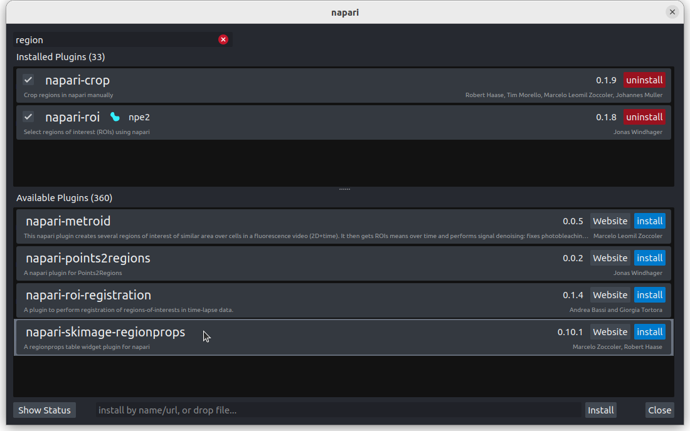
If it is already installed, then nothing else needs to be done. If it is
not installed, press install, and when finished, restart Napari.
Loading an image and creating a mask
We recommend starting a new session in Napari in order to make sure the variable names in the console are correct. If you have come straight from the last lesson the first few steps will be familiar, but can be quickly repeated by copy and pasting into the console.
First, let’s open one of Napari’s sample images with:
File > Open Sample > napari builtins > Cells (3D + 2Ch)
Open Napari’s console by pressing the  button,
then copy and paste the code below.
button,
then copy and paste the code below.
PYTHON
from skimage.filters import threshold_otsu, gaussian
image = viewer.layers["nuclei"].data
blurred = gaussian(image, sigma=3)
threshold = threshold_otsu(blurred)
semantic_seg = blurred > threshold
viewer.add_labels(semantic_seg)And you should see the image above. You are now ready to begin this lesson.
Our first measurement
We now have a mask image with each pixel classified as either cell nuclei (pixel value 1) or not (pixel value 0). Try running the following code in the console.
PYTHON
# We're going to need some functions from the Numpy library.
import numpy as np
# How many pixels are there in total in the image?
total_pixels = semantic_seg.size
# How many pixels are labelled as cell nuclei (pixel value = 1)?
# We'll use Numpy's count_nonzero method.
nuclei_pixels = np.count_nonzero(semantic_seg)
# Now we can work out what percentage of the image is cell nuclei
nuclei_percent = nuclei_pixels / total_pixels * 100
# And write the results to the console with some formatting.
# Python's f-string format allows us to easily mix text and
# code in our print statements. The curly brackets contain
# code and the ":2f" provides formatting instructions, here
# telling Python to only print 2 decimal points.
print(f"Percent Nuclei = {nuclei_percent:.2f}%")OUTPUT
Percent Nuclei = 19.47%Is knowing the percentage of pixels that are classed as nuclei sufficient for our purposes? Thinking back to some of the research questions we discussed in the episode on designing an experiment , if the percentage changes over time we can infer that something is happening but what? We can’t say whether the nuclei are changing in number or in size or shape. For most research questions we will need a more informative measurement.
Saving and repeating your work
Let’s assume that measuring percentage of nuclei is sufficient for your research question. How do we automate and repeat this workflow on new images? The Napari Python console has a built in save function.
Delete the semantic_seg layer from the viewer and run:
After pressing enter you should see the calculated percent nuclei and the semantic_seg layer should reappear. We will reuse the save function at the end of this lesson.
Counting the nuclei
We now need to count the number of nuclei in the image. We can use the the label function from scikit-image. The label function is an example of connected component analysis . Connected component analysis will go through the entire image, determine which parts of the segmentation are connected to each other and form separate objects. Then it will assign each connected region a unique integer value. Let’s try it.
PYTHON
# Import the label function
from skimage.measure import label
# Run the label function on the mask image
instance_seg = label(semantic_seg)
# Add the result to the viewer
viewer.add_labels(instance_seg)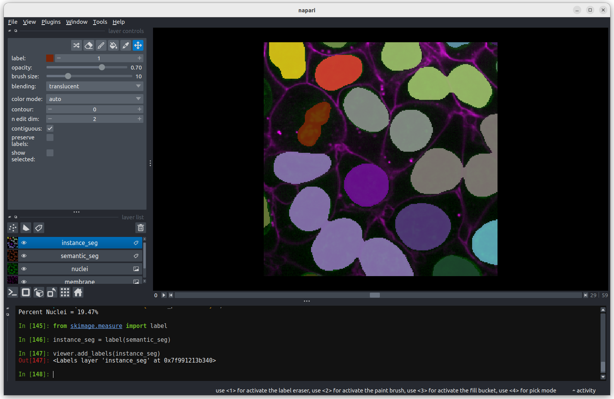 You should see the above image in the Napari viewer. The different colours are used to represent different nuclei. The instance segmentation assigns a different integer value to each nucleus, so counting the number of nuclei can be done very easily by taking the maximum value of the instance segmentation image.
PYTHON
# Calculate number of nuclei from instance segmentation
print(f"Number of Nuclei = {instance_seg.max()}")OUTPUT
Number of Nuclei = 18We can reuse Numpy’s count_nonzero function on an
individual nucleus by specifying an integer value between 1 and 18
PYTHON
# How many pixels are there in nucleus 1
nucleus_id = 1
print(f"There are {np.count_nonzero(instance_seg == nucleus_id)}",
f"pixels in nucleus {nucleus_id}")OUTPUT
There are 43945 pixels in nucleus 1Congratulations, you’ve measured the size (in pixels) of the first nucleus. Later in this lesson, we’ll cover how to convert the size in pixels to volume in cubic micrometres and how to get statistics on the sizes of all the nuclei. Before we do that, we’ll use the napari-skimage-regionprops plugin to interactively examine the size and shape of individual nuclei.
Using napari-skimage-regionprops plugin to measure nuclei size
If you followed the instructions above the napari-skimage-regionprops plugin
should already be installed. If not then do it now and restart Napari.
If the plugin is installed you can use the toolbar to open
tools > measurement tables > Regionsprops(skimage, nsr).
You should see a dialog like this: 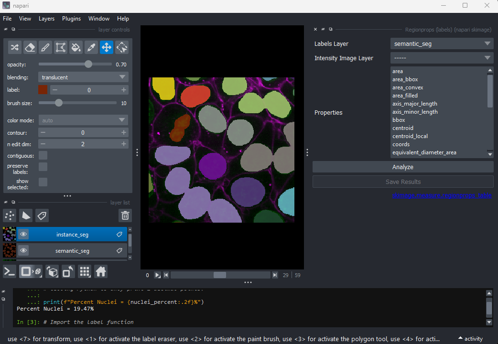
Select nuclei(data) in the image drop down box and
instance_seg(data) in the labels drop down box. You can
choose to measure various shape properties with this plugin but for now
let’s keep it simple, making sure that only the size and
position tick boxes are selected. Click run. A
table of numeric values should appear under the plugin dialog box, like
the image below. 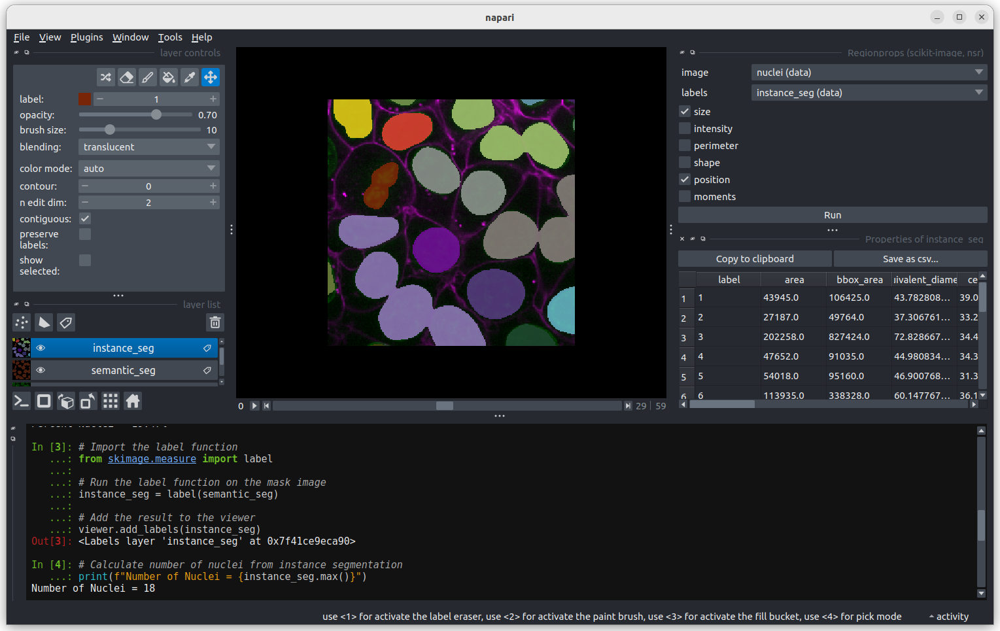
The regionprops plugin can generate a lot of information on the shape
and size of each connected region. You can use the horizontal scroll bar
to move across the table and see more. For now we will focus only on the
second column, headed area, which shows the size (in
pixels). Let’s look more closely at some the extreme values.
Let’s start with label 3 which is the largest labelled nucleus. 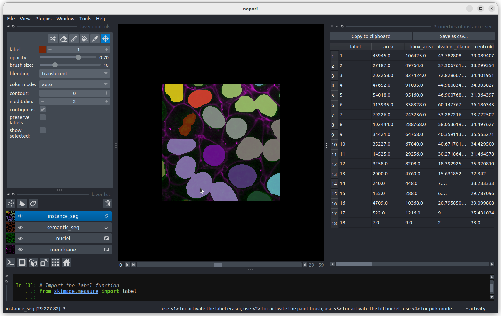 According to the table, nucleus 3 is larger than the other nuclei (202258 pixels). In the what is an image lesson, we learnt to use the mouse pointer to find particular values in an image. Hovering the mouse pointer over the light purple nuclei at the bottom left of the image we see that these apparently four separate nuclei have been labelled as a single nucleus. Before we examine the reasons for this we’ll look at the other extreme value, the smallest nucleus.
The smallest nucleus is labelled 18, at the bottom of the table with
a size of 7 pixels. We can use the position data (the
centroid and bbox columns) in the table to
help find this nucleus. We need to navigate to slice 33 and get the
mouse near the top left corner (33 64 0) to find label 18 in the image.
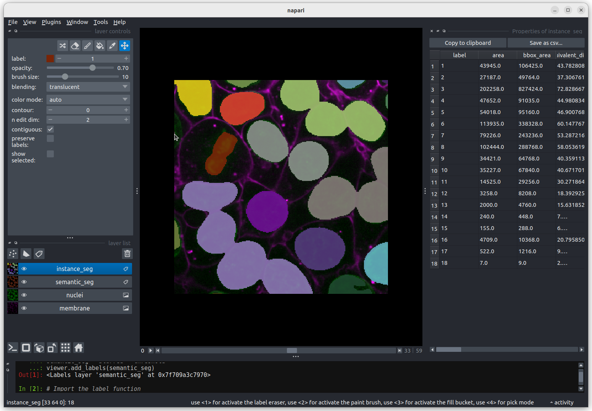
Nucleus 18 is right at the edge of the image, so is only a partial
nucleus. Partial nuclei will need to be excluded from our analysis.
We’ll do this later in the lesson with a clear border filter. However, first we
need to solve the problem of joined nuclei.
Separating joined nuclei
Our first problem is how to deal with four apparently distinct nuclei
(labelled with a light purple colour) being segmented as a single
nucleus. Referring to the images above, three of the light purple nuclei
are visibly touching, so it is not surprising that they have been
considered as a single connected component and thus
labelled as a single nucleus. What about the fourth apparently separate
nucleus? It is important to remember that this is a three-dimensional
image and so pixels will be considered as “connected” if they are
adjacent to another segmented pixel in any of the three dimensions (and
not just in the two-dimensional slice that you are looking at).
You may remember from our first
lesson that we can change to 3D view mode by pressing the  button. Try it now.
button. Try it now.
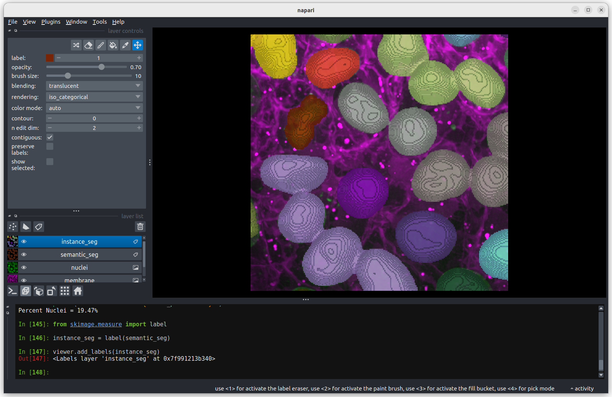 You should see the image rendered in 3D, with a clear join between the upper most light purple nucleus and its neighbour. So now we understand why the instance labelling has failed, what can we do to fix it?
Erode the semantic segmentation so all nuclei are separate
In order to use the label function to count the cell nuclei we first
need to make sure all the nuclei are separate. We can do this by
reducing the apparent size of the nuclei by eroding the image. Image
erosion is an image filter, similar to those we covered in the filters and thresholding
lesson. We will use scikit-image’s binary_erosion
function. In this lesson we will run the binary erosion function using
the Napari console to help develop our scripting skills. It is also
possible to run the binary erosion function through a plugin:
Tools > Segmentation post-processing > Binary erosion (scikit-image, nsbatwm)
if you prefer.
The binary erosion function sets a pixel to the minimum value in the
neighbourhood defined by a footprint parameter. We’ll use
scikit-image’s ball
function to generate a sphere to use as the footprint. Image erosion has
the effect of making bright areas of the image smaller. In this case the
labelled (non-zero) nuclei will become smaller, as any pixels closer to
the edge of the nucleus than the radius of the footprint will be set to
zero. We can change the radius of the footprint to control the amount of
erosion. Try eroding the semantic_seg layer with different
integer values for the radius. What radius do you need to ensure all
nuclei are separate?
PYTHON
from skimage.morphology import binary_erosion, ball
# With radius = 1
radius = 1
eroded_mask = binary_erosion(semantic_seg, footprint = ball(radius))
viewer.add_labels(eroded_mask, name = f'eroded ball {radius}')Note that larger radius values will take longer to run on your computer. Keep your radius values <= 10.
To test different values of radius, you can assign a different value
to radius, e.g. radius = 5 and rerun the last two lines
from above. Or you can try with a Python for
loop which enables us to test multiple values of radius quickly.
PYTHON
# The for loop will repeat the indented lines of codes for each value
# of radius in the list (1, 5, 10).
for radius in 1, 5, 10:
eroded_mask = binary_erosion(semantic_seg, footprint = ball(radius))
viewer.add_labels(eroded_mask, name = f'eroded ball {radius}')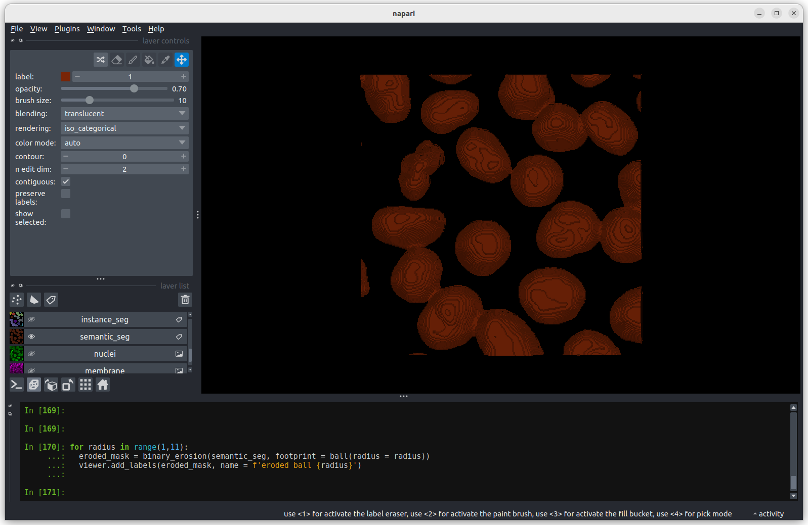 The first image shows the mask without any erosion for comparison.
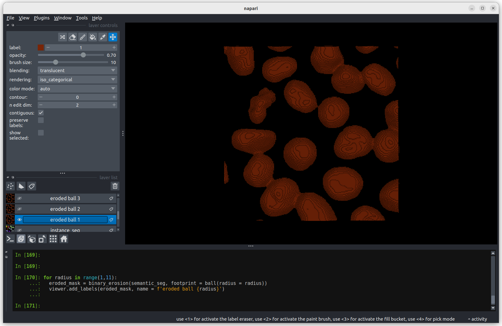 Erosion with a radius of 1 makes a small difference, but the nuclei remain joined.
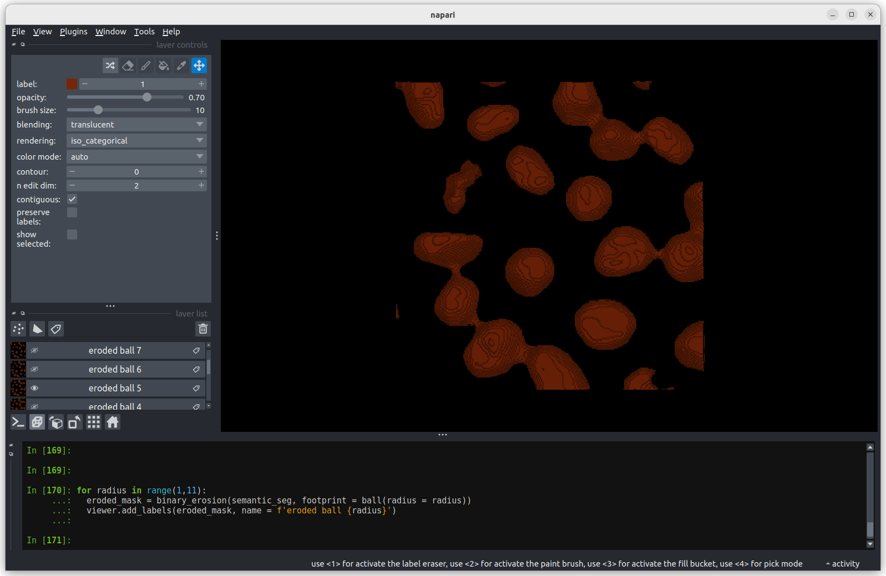 Erosion with a radius of 5 makes a more noticeable difference, but some nuclei remain joined.
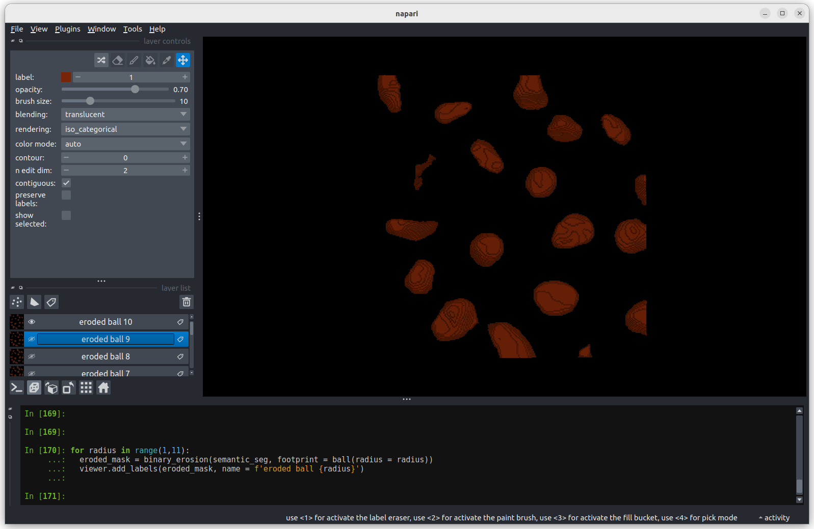 Erosion with a radius of 10 separates all nuclei.
An alternative to performing a single large erosion (radius = 10) is
to perform a small erosion (radius = 1) 10 times. Doing this will give
subtly different results. As an extra activity you could try doing this
using a for loop and comparing the results?
Now we have separate nuclei, lets try creating instance labels again.
PYTHON
# Remove the incorrect instance segmentation from the viewer
viewer.layers.remove('instance_seg')
eroded_semantic_seg = viewer.layers['eroded ball 10'].data
# Create a new instace segmentation using the eroded mask
instance_seg = label(eroded_semantic_seg)
viewer.add_labels(instance_seg)
print(f"Number of nuclei after erosion = {instance_seg.max()}")OUTPUT
Number of nuclei after erosion = 19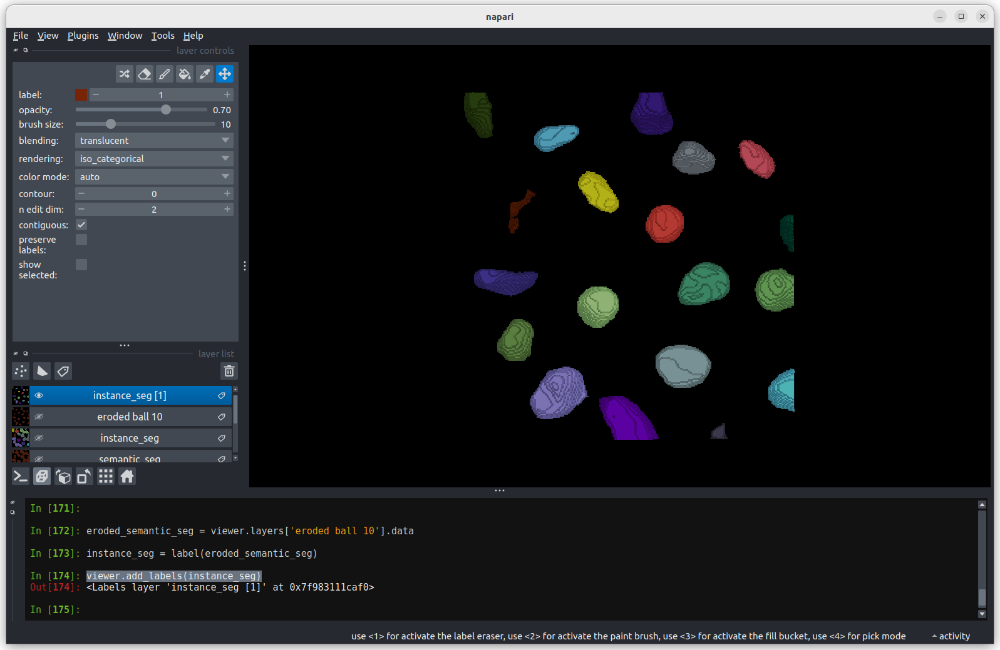 Looking at the image above, there are no longer any incorrectly joined nuclei. The absolute number of nuclei found hasn’t changed much as the erosion process has removed some partial nuclei around the edges of the image.
Performing any size or shape analysis on these nuclei will be flawed,
as they are heavily eroded. We can largely undo much of the erosion by
using the scikit-image’s expand
labels function. The expand labels function is a filter which
performs a dilation , expanding the bright (non-zero) parts
of the image. The expand labels function adds an extra step to stop the
dilation when two neighbouring labels meet, preventing overlapping
labels.
PYTHON
from skimage.segmentation import expand_labels
# Remove the eroded instance segmentation from the viewer
viewer.layers.remove('instance_seg')
# Expand the labels using the same radius we used when eroding them (10)
instance_seg = expand_labels(instance_seg, 10)
# Put the new instance segmentation back in the viewer
viewer.add_labels(instance_seg)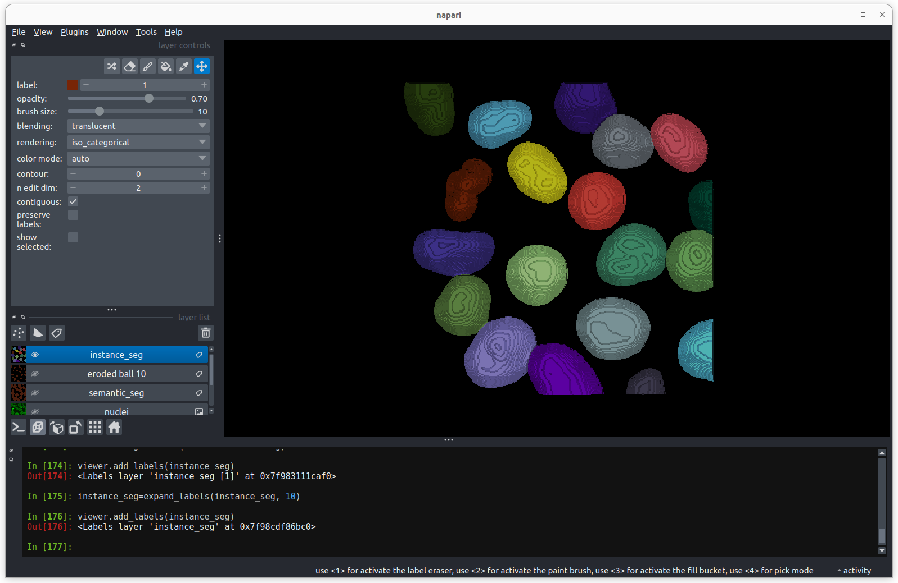 There are now 19 apparently correctly labelled nuclei that appear to be the same shape as in the original mask image.
Is the erosion completely reversible?
In order to create a correct instance segmentation we have performed
a mask erosion followed by a label expansion. This is a common image
operation often used to remove background noise, known as as
opening, or an erosion followed by a dilation. In addition
to helping us separate instances it will have the effect of removing
objects smaller than the erosion footprint, in this case a sphere with
radius 10 pixels. If we compare the eroded and expanded image with the
original mask, what will we see?
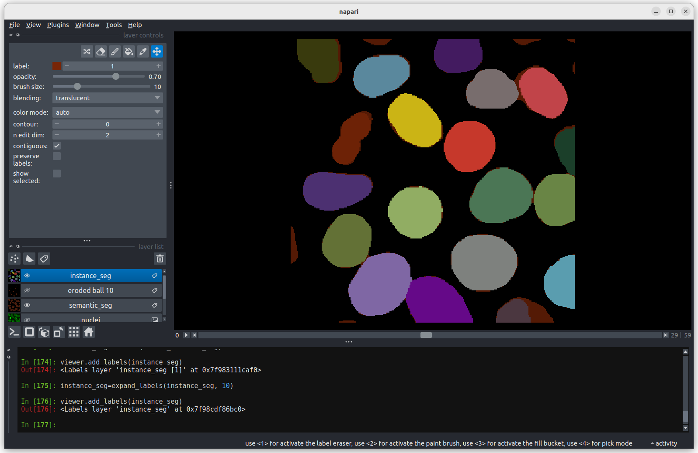 Looking at the above image we can see some small mismatches around the edges of most of the nuclei. It should be remembered when looking at this image that it is a single slice though a 3D image, so in some cases where the differences look large (for example the nucleus at the bottom right) they may still be only one pixel deep. Will the effect of this on the accuracy of our results be significant?
Removing Border Cells
Now we return to the second problem with our initial instance segmentation, the presence of partial nuclei around the image borders. As we’re measuring nuclei size, the presence of any partially visible nuclei could substantially bias our statistics. We can remove these from our analysis using scikit-image’s clear border function.
PYTHON
from skimage.segmentation import clear_border
viewer.layers.remove('instance_seg')
instance_seg = clear_border(instance_seg)
viewer.add_labels(instance_seg)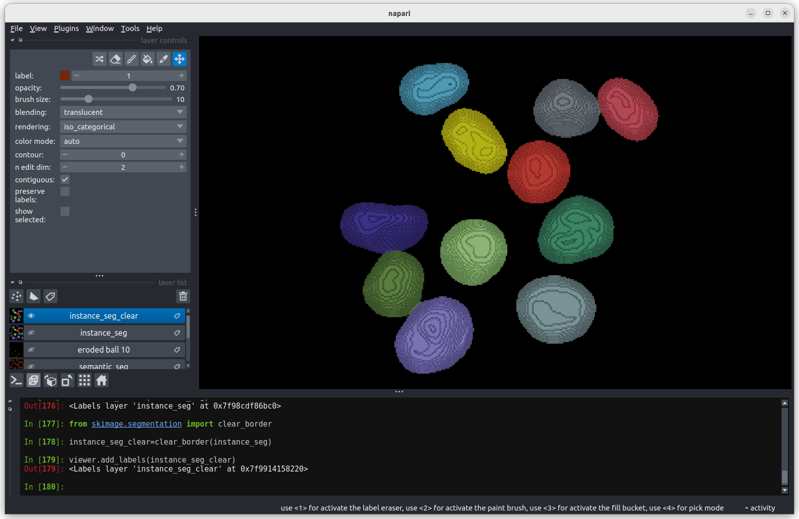 We now have an image with 11 clearly labelled nuclei. You may notice that the smaller nucleus (dark orange) near the top left of the image has been removed even though we can’t see where it touches the image border. Remember that this is a 3D image and clear border removes nuclei touching any border. This nucleus has been removed because it touches the top or bottom (z axis) of the image. Let’s check the nuclei count as we did above.
PYTHON
# First count the nuclei
number_of_nuclei = instance_seg.max()
print(f"There are {number_of_nuclei} individual nuclei")OUTPUT
There are 19 individual nucleiWhy are there still 19 nuclei? When we ran clear_borders
the pixels corresponding to border nuclei were set to zero, however the
total number of labels in the image was not changed, so whilst there are
19 labels in the image some of them have no corresponding pixels. The
easiest way to correct this is to re label the image (and replace the
old instance segmentation in the viewer.)
PYTHON
viewer.layers.remove('instance_seg')
instance_seg = label(instance_seg)
number_of_nuclei = instance_seg.max()
print(f"There are {number_of_nuclei} individual nuclei")
viewer.add_labels(instance_seg)OUTPUT
There are 11 individual nucleiYou now have a correct instance segmentation. You could return to
using the napari-skimage-regionprops plugin to calculate the sizes of
each nucleus and export the results to a speadsheet or your preferred
analysis software using the save as csv function. However
you’ve probably picked up enough Python during this course to complete
the analysis you need with just the Napari console. Let’s give it a try.
The following commands should work with copy and paste, so don’t worry
too much if you don’t think you’ve quite mastered Python for loops
yet.
Earlier in the lesson we used a Python for
loop to try out three different erosion radii. Now let’s use a for
loop to count the number of pixels in each of the 11 nuclei. For this
we’ll take advantage of Python’s range function which
returns a list of numbers.
PYTHON
# Create a list of label values for each label in the instance segmentation
# We need to add 1 to the number of nuclei as python's range function
# includes the lower limit (1) but not the upper limit.
labels = range(1, number_of_nuclei + 1)
# Print it to the console to check it's right
for label in labels:
print (label)OUTPUT
1
2
3
4
5
6
7
8
9
10
11Earlier in the lesson we used Numpy’s count_nonzero
function to find the size of a single nucleus. Let’s put it inside the
for loop to find the size of every nucleus. We’ll use a Python list to
store the results.
PYTHON
# Create an empty list
nucleus_pixels = []
# Go through each nucleus,
for label in labels:
# Append the number of pixels to the list
nucleus_pixels.append(np.count_nonzero(instance_seg == label))We now have a list of nuclei sizes in pixels. We can check what is in the list with a print statement.
OUTPUT
[40960, 26847, 60268, 46545, 51409, 46866, 53108, 37869, 36523, 40809, 14548]We see 11 values within the list. Each value tells us the number of pixels in a particular nucleus. Before we do too much analysis on the nuclei sizes we should convert them to a physical value, rather than pixels.
Size in pixels to cell volume
To convert to volumes we need to know the pixel size. In the lesson on filetypes and metadata we learnt how to inspect the image metadata to determine the pixel size. Unfortunately the sample image we’re using in this lesson has no metadata. Fortunately the image pixel sizes can be found in the scikit-image documentation . So we can assign a pixel size of 0.26μm (x axis), 0.26μm (y axis) and 0.29μm (z axis). Using this pixel size, we can then calculate the nucleus volume in cubic micrometres.
PYTHON
# Let's keep everything in micrometres
pixel_volume = 0.26 * 0.26 * 0.29
# We can multiply all nuclei by the pixel volume by first converting the
# nucleus_pixels to a numpy array.
nucleus_volume = pixel_volume * np.array(nucleus_pixels)We can now use some simple functions to find the range, mean, and standard deviation of the nuclei in micrometers.
PYTHON
# Find the range of nucleus sizes (maximum - minimum).
print(f"Range of nucleus volumes = {nucleus_volume.max() - nucleus_volume.min():.2f} cubic micrometres.")
# Find the mean nuclei volume
print(f"Nucleus volume mean = {np.mean(nucleus_volume):.2f} cubic micrometres.")
# And the standard deviation
print(f"Nucleus volume standard dev. = {np.std(nucleus_volume):.2f} cubic micrometres.")OUTPUT
Range of nucleus volumes = 579.10 cubic micrometres.
Nucleus volume mean = 855.98 cubic micrometres.
Nucleus volume standard dev. = 170.19 cubic micrometres.These numbers provide a good quantitative measure of the quantity and volume of cell nuclei suitable for an experiment investigating how these quantities change over time.
We can save our work from the console for re-use on data from subsequent time points, creating a repeatable measurement workflow.
This will create a Python file measurement_pipepine.py
that we can load into the Napari console and re-run. You may choose to
edit the file with any text editor to remove some of the redundant steps
we’ve made whilst learning.
- Connected component analysis (the label function) was used to assign each connected region of a mask a unique integer value. This produces an instance segmentation from a semantic segmentation.
- Erosion and dilation filters were used to correct the instance segmentation. Erosion was used to separate individual nuclei. Dilation (or expansion) was used to return the nuclei to their (approximate) original size.
- Partial nuclei at the image edges can be removed with the clear_border function.
- The napari-skimage-regionprops plugin can be used to interactively examine the nuclei shapes.
- The Python console can be used to automate and save the image analysis pipeline.